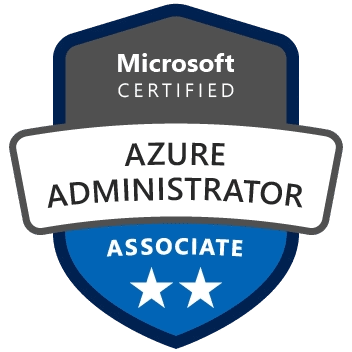

Studied M.Tech in Computer Science & Engineering, M.Sc in Computer Science

I am a Master of Science degree candidate, specializing in Computer Science. I come from a solid technical background with a strong interest in business and a passion towards strategy. I have total 8+ years of experience in IT industry with 7+ years of experience in DevOps/Azure DevOps/ DevSecOps
Past Companies
Infosys BPO Limited, Bangalore as Operations Process Executive - Jun 2013 to Feb 2014
eBusiness Applications, Dubai as Software Tester - Oct 2014 to Oct 2015
Capgemini Technology Services India Limited, Bangalore as Senior Consultant - Sep 2016 to Sep 2018
Capgemini Technology Services, Hong Kong as Senior Consultant - Sep 2018 to May 2019
Capgemini Technology Services India limited, Bangalore as Senior Consultant - May 2019 to Nov 2021
MindTree Limited, Bangalore as Techincal Lead - Nov 2021 to Aug 2022
Infosys Limited, Bangalore as Senior Consultant - Aug 2022 TillDate